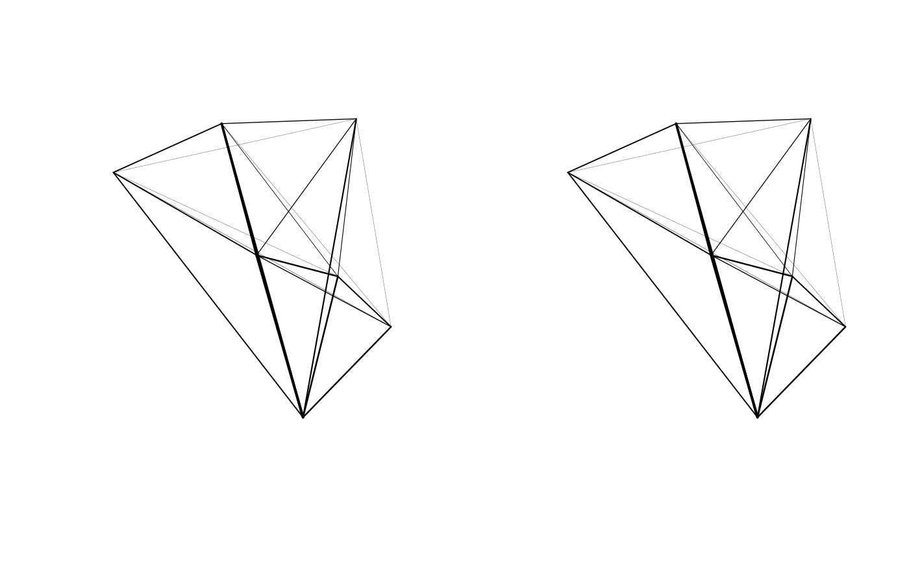

For example, sum total travel in both directions.
od_oneway( x, attrib = names(x[-c(1:2)])[vapply(x[-c(1:2)], is.numeric, TRUE)], id1 = names(x)[1], id2 = names(x)[2], stplanr.key = NULL )
Arguments
| x | A data frame or SpatialLinesDataFrame, representing an OD matrix |
|---|---|
| attrib | A vector of column numbers or names, representing variables to be aggregated. By default, all numeric variables are selected. aggregate |
| id1 | Optional (it is assumed to be the first column) text string referring to the name of the variable containing the unique id of the origin |
| id2 | Optional (it is assumed to be the second column) text string referring to the name of the variable containing the unique id of the destination |
| stplanr.key | Optional key of unique OD pairs regardless of the order,
e.g., as generated by |
Value
oneway outputs a data frame (or sf data frame) with rows containing
results for the user-selected attribute values that have been aggregated.
Details
Flow data often contains movement in two directions: from point A to point B
and then from B to A. This can be problematic for transport planning, because
the magnitude of flow along a route can be masked by flows the other direction.
If only the largest flow in either direction is captured in an analysis, for
example, the true extent of travel will by heavily under-estimated for
OD pairs which have similar amounts of travel in both directions.
Flows in both direction are often represented by overlapping lines with
identical geometries (see flowlines()) which can be confusing
for users and are difficult to plot.
See also
Other od:
dist_google(),
od2line(),
od2odf(),
od_aggregate_from(),
od_aggregate_to(),
od_coords2line(),
od_coords(),
od_dist(),
od_id,
od_to_odmatrix(),
odmatrix_to_od(),
points2flow(),
points2odf()
Examples
#> # A tibble: 3 x 6 #> geo_code1 geo_code2 all from_home light_rail train #> <chr> <chr> <dbl> <dbl> <dbl> <dbl> #> 1 E02002361 E02002361 109 0 0 0 #> 2 E02002361 E02002363 38 0 0 1 #> 3 E02002363 E02002361 30 0 0 0(od_oneway <- od_oneway(od_min))#> # A tibble: 2 x 6 #> geo_code1 geo_code2 all from_home light_rail train #> <chr> <chr> <dbl> <dbl> <dbl> <dbl> #> 1 E02002361 E02002361 109 0 0 0 #> 2 E02002361 E02002363 68 0 0 1# (od_oneway_old = onewayid(od_min, attrib = 3:6)) # old implementation nrow(od_oneway) < nrow(od_min) # result has fewer rows#> [1] TRUE#> [1] TRUEod_oneway(od_min, attrib = "all")#> # A tibble: 2 x 3 #> geo_code1 geo_code2 all #> <chr> <chr> <dbl> #> 1 E02002361 E02002361 109 #> 2 E02002361 E02002363 68attrib <- which(vapply(flow, is.numeric, TRUE)) flow_oneway <- od_oneway(flow, attrib = attrib) colSums(flow_oneway[attrib]) == colSums(flow[attrib]) # test if the colSums are equal#> All Work.mainly.at.or.from.home #> TRUE TRUE #> Underground..metro..light.rail..tram Train #> TRUE TRUE #> Bus..minibus.or.coach Taxi #> TRUE TRUE #> Motorcycle..scooter.or.moped Driving.a.car.or.van #> TRUE TRUE #> Passenger.in.a.car.or.van Bicycle #> TRUE TRUE #> On.foot Other.method.of.travel.to.work #> TRUE TRUE# Demonstrate the results from oneway and onewaygeo are identical flow_oneway_geo <- onewaygeo(flowlines, attrib = attrib) flow_oneway_sf <- od_oneway(flowlines_sf)#>par(mfrow = c(1, 2)) plot(flow_oneway_geo, lwd = flow_oneway_geo$All / mean(flow_oneway_geo$All)) plot(flow_oneway_sf$geometry, lwd = flow_oneway_sf$All / mean(flow_oneway_sf$All))
par(mfrow = c(1, 1)) od_max_min <- od_oneway(od_min, stplanr.key = od_id_character(od_min[[1]], od_min[[2]])) cor(od_max_min$all, od_oneway$all)#> [1] 1# benchmark performance # bench::mark(check = FALSE, iterations = 3, # onewayid(flowlines_sf, attrib), # od_oneway(flowlines_sf) # )